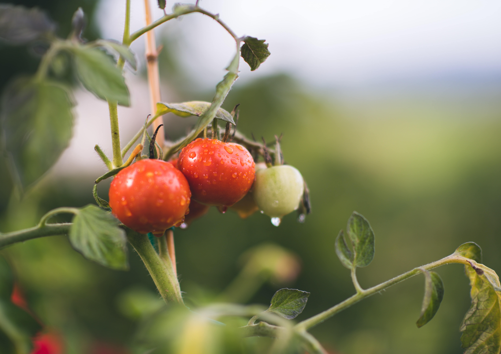

We want to be proud that everything made by us
is 100% organic.
Nature, living in an ecological way, healthy lifestyle - this makes OrganicME a special place. The café is situated on High Street in a little town – Kelso, which has a lot to offer for tourists and local community, and the location in this place gives Organic ME a good insight in local matters.
Originators
One day the ex restaurant chef and his life partner decided to take a different path in their life and do what they always loved - share the goodness with people. Meryl and Jack opened their first café in the area of Scottish Borders that serves only organic products, supports local community and local farmers, teach people how to make a life-changing steps in their organic lives and help the environment. Their mission is to encourage the local community, tourists and OrganicME customers to spend time outdoors in the natural surroundings of the Scottish Borders.
